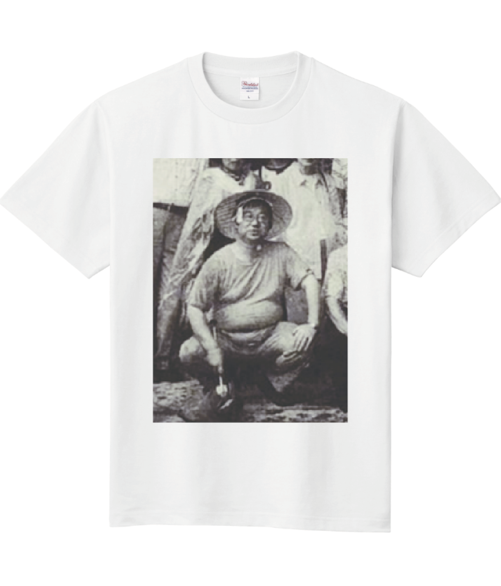
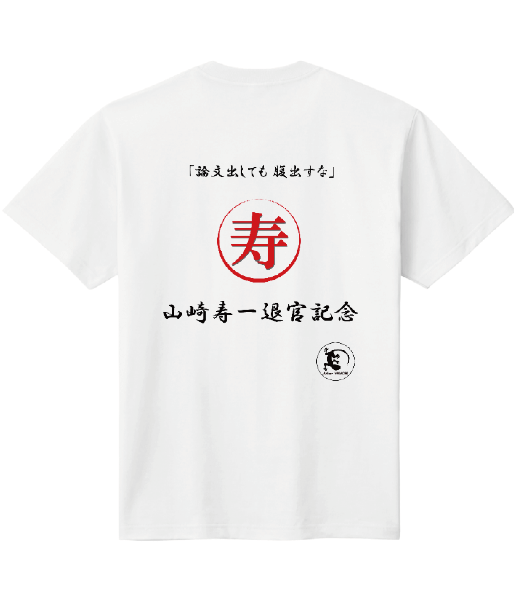
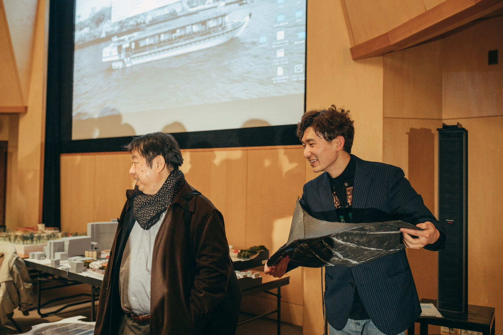
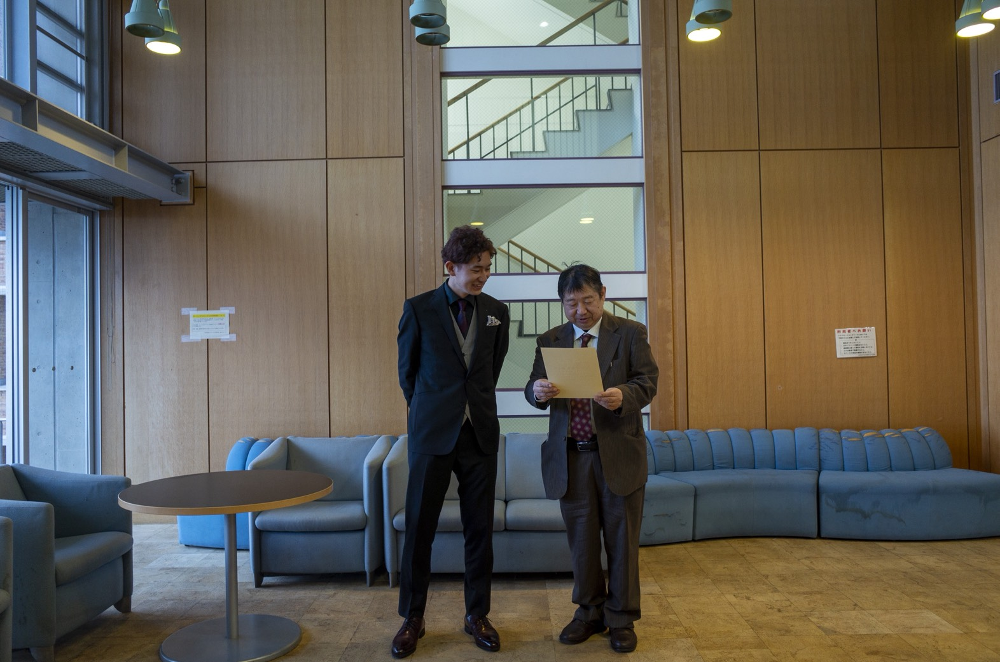
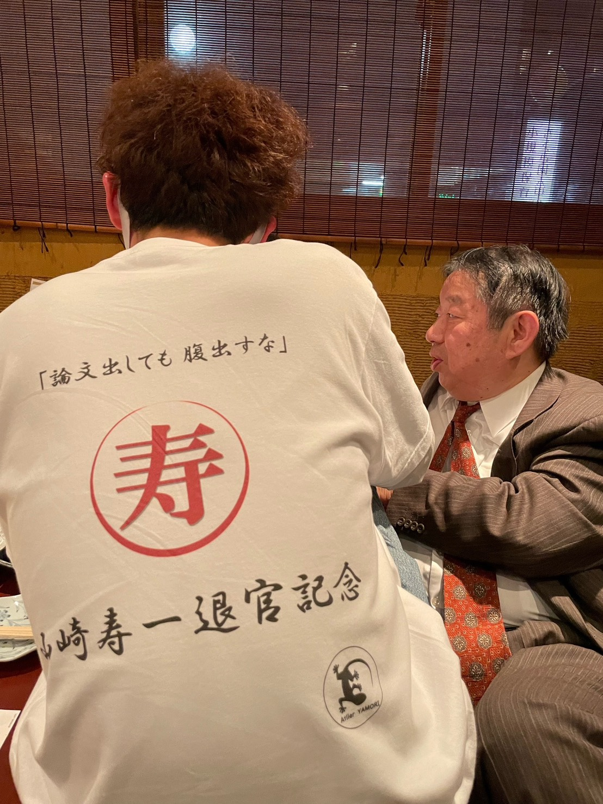

寿一Tシャツ 2023
40年の研究者人生の晩節を汚すべく、それに相応しい服を作成。OB大興奮。寿一は一ミリも笑っていなかった。 寿一の奥さんと息子さんからにプレゼントしようとするも、普通に要らないと断られる。 Ｔシャツ一枚が張り付くことによって、裸よりも際立ったこの寿一のボディ・ラインを堪能してほしい。 おへその窪みには手首まで入ってしまいそうだ。 プリントTシャツ作成サービスを利用(果たして作品に入れていいのか…？)。 現在の所在は不明である。こんないじり倒した後に言っても全く説得力はないだろうが、僕は寿一を心から尊敬しているし、僕が建築を学ぼうと決心するに思い立ったのは、寿一や寿一の思想、寿一が繋いでくれた縁によるところが非常に大きい。 お父さんみたいなものだ。いつまでも終わらないゼミ。おしっこを必死に我慢しながら、上の空で寿一の話を聞いている(いない)。 そのときの光景。椅子に座っている寿一のお腹のふくらみ。あの質量を持った曲線が、僕の建築の根っこの方には確かに存在していると感じられるのは、とても素敵なことだと、僕は思う。




